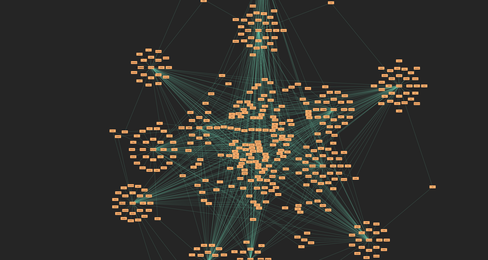

This network shows the relationship between episodes and the adjectives used in them. The nodes represent words or episodes, and the connections show how they are linked. It helps visualize how language is used across episodes.